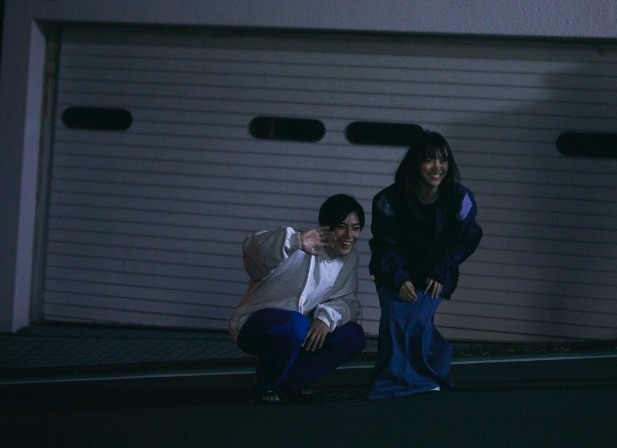

2019/0629Satホットギミックガールミーツボーイ公開中です
ホットギミック ガールミーツボーイ公開中です
早速観てくださった方々、ありがとうございます！

そして今日が私と山戸結希監督の
ラスト舞台挨拶でした
完成披露試写会から始まり、大阪、地元の岐阜、福岡、沖縄、上海、豊洲、横浜、川崎
たくさんの場所に行かせていただき、皆さまの前で
"ホットギミック ガールミーツボーイ"のお話をさせていただけて、たくさんの方が観に来てくださって嬉しい気持ちでいっぱいです。
山戸監督は女の子の気持ちをわかり尽くしている方で、わかり尽くしているのにもっと分かろうとしてくださる強くて優しい方です。
だからこそ山戸監督の撮る映像には女の子の気持ちが溢れているし、そんな女の子に向けたストーリー以上のメッセージも込められています。
溺れるナイフを観た時に、この方の作る作品が好きだ！って直感で思いました。そんな素敵な監督の作品に主演として出させていただけて本当に幸せものでした。
清水さん演じる亮輝、板垣さん演じる梓、間宮さん演じる凌、皆さんそれぞれの魅力が爆発しまくっていてそんなほかの作品では観られないような一面の魅力を引き出せるのも山戸さんならではだなぁと思っています。
めちゃくちゃ三者三様に素敵なので、必見です。
ひよりちゃん演じる茜も、上村さん演じるすばるも、茜とすばるでしかなくて2人には2人の悩みや時間が流れていて素敵でした。撮影中も2人にたくさん救われました。ありがとうございます。良き友です。
現役アイドルではありますが、
そんなガラスはとっくにぶち破ってこの映画に挑みました。全身全霊をかけて、初を演じました。
分からなくても分かりすぎても、とにかく皆さんには新たな青春を感じてほしいです。
楽しさだけではない苦しみから生まれる青いもの。そっちの方がよっぽどキラキラしてるんじゃないかなって思うんです。
なので、是非みなさんの目で、みてください。
#ホットギミック
#ホットギミックガールミーツボーイ
でたくさんの言葉を、感想をSNSに溢れさせてくださったら嬉しいです。
この作品が、よりたくさんの方の胸に届きますように...



青春でした。
初ちゃん、ありがとう。一緒に頑張ろうね。大好きです。
2019/06/29 18:54
コメント(329)
沢山テレビで見れた～。告知出来る機会が沢山あるのはいいね！
もっとセンター付近で歌ってもらいたいからこれからも推してまっす
映画見ました、とってもよかったです(´▽`)ノ
青春か〜〜〜(*´ω｀*)若い時だけてばない！ヽ(￣▽￣)ノ幾つに成ってもトキメキが有れば青春さ♪ヽ(´▽｀)/おっちゃんも今年で49歳((o(^∇^)o))未だ未だ坂道46♪追っ掛けですから(ほぼ在宅ヲタですが・・・・(´Д｀)何か？(゜ロ゜)(笑))８月の幕張メッセは全握だぜ↑↑↑↑楽しみだす(*´ω｀*)
オテンキのりさんも、早速観に行ったそうですね！
来週のレコメン！は収録ですが、再来週の時にのりさんの感想を聞きたいですね♪☆
来週のレコメン！は収録ですが、再来週の時にのりさんの感想を聞きたいですね♪☆
未央奈！
ホットギミック、観てきました！！
今日の握手会、券とれなかったから、ホットギミック観ようって決めてて！！
本当によかった！新たな青春映画って感じがした。
何より未央奈の全力を感じたよ！！
ほんとに今まで観たことのない映画だった！
お疲れさま☺️
たくさんの人にホットギミックが届きますように！
ホットギミック、観てきました！！
今日の握手会、券とれなかったから、ホットギミック観ようって決めてて！！
本当によかった！新たな青春映画って感じがした。
何より未央奈の全力を感じたよ！！
ほんとに今まで観たことのない映画だった！
お疲れさま☺️
たくさんの人にホットギミックが届きますように！
初ちゃんも未央ちゃんも大好きです！
未央ちゃんにいつか会いたいな～
と思って学校頑張ってます
私、未央ちゃんの握手会もうちょっと大きくなったら絶対行きます！！
未央ちゃんにいつか会いたいな～
と思って学校頑張ってます
私、未央ちゃんの握手会もうちょっと大きくなったら絶対行きます！！
映画楽しみにしてるー！❤️
昨日何気なくテレビ見てたらミオナ出てて嬉しかった❤️
握手会とかなかなか行けないからブログで癒して ❤️
昨日何気なくテレビ見てたらミオナ出てて嬉しかった❤️
握手会とかなかなか行けないからブログで癒して ❤️
みーおな！！
テスト終わったら即見に行きまっす！！
楽しみすぎるよお♡可愛い可愛い未央奈のほんとに好き♡♡
テスト終わったら即見に行きまっす！！
楽しみすぎるよお♡可愛い可愛い未央奈のほんとに好き♡♡
みおなかわいい！
ヘアケア何をしていますか？
こんばんは
いつも応援しています
毎日、笑顔を届けてくれてありがとう
あなたの溢れる笑顔で
こちらも自然と笑顔がこぼれます
他人が何を思ってるのかなんて
分からないよね
同性の男の子の気持ちも分からないのに
女の子の気持ちなんて分かるわけもない
でもそれでいいんです
知ろうと努力することに意味がある
興味の対象が広い人に憧れます
一心不乱に一つのことをっていう
職人気質も素敵だけど
パラボラアンテナのように
興味のアンテナ360度回転してるような人
季節の変わり目
体調管理に気をつけて
元気で活動してください
それでは、ごきげんよう
いつも応援しています
毎日、笑顔を届けてくれてありがとう
あなたの溢れる笑顔で
こちらも自然と笑顔がこぼれます
他人が何を思ってるのかなんて
分からないよね
同性の男の子の気持ちも分からないのに
女の子の気持ちなんて分かるわけもない
でもそれでいいんです
知ろうと努力することに意味がある
興味の対象が広い人に憧れます
一心不乱に一つのことをっていう
職人気質も素敵だけど
パラボラアンテナのように
興味のアンテナ360度回転してるような人
季節の変わり目
体調管理に気をつけて
元気で活動してください
それでは、ごきげんよう
こんばんはっ！
いやぁ、困ったよ
本当に困った
未央奈を好きになり過ぎて困った
寝ても覚めても
未央奈が好きで
あぁ、困った
いやぁ、困ったよ
本当に困った
未央奈を好きになり過ぎて困った
寝ても覚めても
未央奈が好きで
あぁ、困った
テレビで見て面白くてかわいいなあと思ってたんですが、映画を観てみたらどんどん内容と役にハマっていきました。
特に最後の方吸い込まれるような演技で、これからも応援してます！
特に最後の方吸い込まれるような演技で、これからも応援してます！
ホットギミック良かったです。
もう一回見たくなりました。
初と堀ちゃんが一体になってました。今度堀ちゃんを見ても、初や！と思ってしまいそうです。
板垣くんがインタビューで「堀さんの大食いにびっくりした」という意味のことを仰っていて笑いました。
また映像作品に出て下さい。
もう一回見たくなりました。
初と堀ちゃんが一体になってました。今度堀ちゃんを見ても、初や！と思ってしまいそうです。
板垣くんがインタビューで「堀さんの大食いにびっくりした」という意味のことを仰っていて笑いました。
また映像作品に出て下さい。
刺さったよ！
Hay未央ちゃん(･∀･∩)“
今日も嫌がらせ弁当“を観てきたよー演出が色々凝ってて楽しかった(^^)
..なんていうか、母ちゃんvs女の子の反抗期の戦争は“怖い“の一言だな..やっぱ母は強し..嫌がらせ弁当という名の、母の愛情弁当！！！
壁破壊パンチって、反抗期の女の子は誰でも経験してるんだな。笑
がんばみおなー
今日も嫌がらせ弁当“を観てきたよー演出が色々凝ってて楽しかった(^^)
..なんていうか、母ちゃんvs女の子の反抗期の戦争は“怖い“の一言だな..やっぱ母は強し..嫌がらせ弁当という名の、母の愛情弁当！！！
壁破壊パンチって、反抗期の女の子は誰でも経験してるんだな。笑
がんばみおなー
堀ちゃん お疲れ様です
今日は東京ビッグサイドを後にして新宿バルト９へ駆け込みました。
なかなかの客入りの中、開演間近にすべりこむと
冒頭からかなり過激な展開が続いていて、体当たりの初をみて
作品世界に圧倒される時間帯が過ぎていくとだんだんと
主人公の背景、立ち位置、見ている世界、心情が伝わってきて
激しい表層と繊細な心がバランスしている様子がわかるようになって
今まで映画鑑賞では感じたことのないような心境で物語を
というか初を見守っていました。これは世界観が重なる若者にこそ理解され
支持される映画なのかもしれませんね。自分には少し難しく感じましたが
正直この物語をもうしばく見ていたい、見続けていたいと思っているなかで
エンディングを迎えてしまいました。
この作品で印象に残ったのは、取り繕ったフィルター越しの
ワードではなくて、腹底の本音ががんがんと語られることですね。
１回だけ見ても世代が違うと( ^ω^ ) わからない部分が
多少あるようです。乃木坂映画も見つつ、また見てみますかね〜
引き込まれる魅力に溢れた素敵な作品でした。ありがとうございました！
今日は東京ビッグサイドを後にして新宿バルト９へ駆け込みました。
なかなかの客入りの中、開演間近にすべりこむと
冒頭からかなり過激な展開が続いていて、体当たりの初をみて
作品世界に圧倒される時間帯が過ぎていくとだんだんと
主人公の背景、立ち位置、見ている世界、心情が伝わってきて
激しい表層と繊細な心がバランスしている様子がわかるようになって
今まで映画鑑賞では感じたことのないような心境で物語を
というか初を見守っていました。これは世界観が重なる若者にこそ理解され
支持される映画なのかもしれませんね。自分には少し難しく感じましたが
正直この物語をもうしばく見ていたい、見続けていたいと思っているなかで
エンディングを迎えてしまいました。
この作品で印象に残ったのは、取り繕ったフィルター越しの
ワードではなくて、腹底の本音ががんがんと語られることですね。
１回だけ見ても世代が違うと( ^ω^ ) わからない部分が
多少あるようです。乃木坂映画も見つつ、また見てみますかね〜
引き込まれる魅力に溢れた素敵な作品でした。ありがとうございました！
堀ちゃん、大好きだよー
ブログ更新ありがとう！忙しいのに2回も更新してくれて本当に嬉しいです(;_;)
ホットギミック ガールミーツボーイ公開、本当におめでとうございます。公開日に近所の映画館に観に行きました。未央奈ちゃんのサイン入りポスターが展示されていて、ポップコーンも買えて嬉しかった⸜(*ˊᵕˋ*)⸝
大阪の舞台挨拶だけだけど、足を運ぶことが出来て幸せでした。握手会に行ったりと未央奈ちゃんのことを本格的に応援し始めたのが今年の3月からだったから、ホットギミックのイベントに間に合って本当に良かったです。でなきゃ後悔しているところでした(;_;)
先行上映会で初めて映画を観た時は気が付いたら初ちゃんを自分に重ねていて、過去の悲しかった思い出をえぐられているような感覚に陥って、ただただ涙が止まりませんでした。どうしてあんなことしてしまったんだろう…って自分のことなのにその時の自分の気持ちが分からなくて、ホットギミックを観て、あの時の私は初ちゃんみたいな状態だったのかなって自分の気持ちの答えを見つけたような、初ちゃんの成長に救われたような気持ちになりました。
映画館で２回目の鑑賞をした時は初めて観た時よりストーリーに集中できました。初めて観た時になぜか号泣してしまったシーンでストーリーに集中できた自分に気が付いて、私は過去の自分を許せたのかな、ホットギミックを観たことで私自身1歩前に進めたのかもしれないと思いました。
キャストの皆さんの演技や色使いに着目して観ることが出来たし、ここ未央奈ちゃんのお気に入りのシーンだ〜とか思いながら観た２回目の鑑賞は、初鑑賞の時より楽しさが増した時間でした。
ストーリー展開は頭に入っていたのに、後半になるに従って身体が熱くなって気が付いたら震えていました。表情、言葉、映像、音楽、全てが組み合わさった時のパワーが凄まじくて、やっぱり涙が止まらなくなっていました。同じ映画を2回観たのは初めてだったけど、こんなに惹き込まれるものなんだと思いました。もう一度観たいと思いました。
映画ホットギミックに、初ちゃんに出会えて幸せです。
素敵な作品を本当にありがとう。
長々とコメントしてごめんなさい(;_;)
沢山の舞台挨拶お疲れ様でした。元気な体でライブを迎えられるよう願っています。
ホットギミック ガールミーツボーイ公開、本当におめでとうございます。公開日に近所の映画館に観に行きました。未央奈ちゃんのサイン入りポスターが展示されていて、ポップコーンも買えて嬉しかった⸜(*ˊᵕˋ*)⸝
大阪の舞台挨拶だけだけど、足を運ぶことが出来て幸せでした。握手会に行ったりと未央奈ちゃんのことを本格的に応援し始めたのが今年の3月からだったから、ホットギミックのイベントに間に合って本当に良かったです。でなきゃ後悔しているところでした(;_;)
先行上映会で初めて映画を観た時は気が付いたら初ちゃんを自分に重ねていて、過去の悲しかった思い出をえぐられているような感覚に陥って、ただただ涙が止まりませんでした。どうしてあんなことしてしまったんだろう…って自分のことなのにその時の自分の気持ちが分からなくて、ホットギミックを観て、あの時の私は初ちゃんみたいな状態だったのかなって自分の気持ちの答えを見つけたような、初ちゃんの成長に救われたような気持ちになりました。
映画館で２回目の鑑賞をした時は初めて観た時よりストーリーに集中できました。初めて観た時になぜか号泣してしまったシーンでストーリーに集中できた自分に気が付いて、私は過去の自分を許せたのかな、ホットギミックを観たことで私自身1歩前に進めたのかもしれないと思いました。
キャストの皆さんの演技や色使いに着目して観ることが出来たし、ここ未央奈ちゃんのお気に入りのシーンだ〜とか思いながら観た２回目の鑑賞は、初鑑賞の時より楽しさが増した時間でした。
ストーリー展開は頭に入っていたのに、後半になるに従って身体が熱くなって気が付いたら震えていました。表情、言葉、映像、音楽、全てが組み合わさった時のパワーが凄まじくて、やっぱり涙が止まらなくなっていました。同じ映画を2回観たのは初めてだったけど、こんなに惹き込まれるものなんだと思いました。もう一度観たいと思いました。
映画ホットギミックに、初ちゃんに出会えて幸せです。
素敵な作品を本当にありがとう。
長々とコメントしてごめんなさい(;_;)
沢山の舞台挨拶お疲れ様でした。元気な体でライブを迎えられるよう願っています。
今日観てきたよ！自分が住んでるとこのすぐ近くがでてきて、びっくりした！
未央奈ちゃんこんばんは‼ありがとうございます！楽しみにしてます‼頑張ります‼ありがとうございます？今年も楽しみにしてます‼
ブログ更新ありがと！
ホットギミック観に行ったよ
何回も観に行くね
3枚目の写真は初というより未央奈だね笑
ホットギミック観に行ったよ
何回も観に行くね
3枚目の写真は初というより未央奈だね笑
こんばんは
雨ですね
梅雨が本格化してきたのかな
小さい頃、よく雨の日は
童謡の『あめふり』を
歌ったっけなぁ
“あめあめふれふれ かあさんが〜”って曲
でもこの曲、実は5番まであって
“雨の日”に3番以降を
“口に出して”歌うと呪われるなんて
都市伝説がありました
確かに3番の歌詞なんてめっちゃ怖い...。
そういえば
今年は乃木坂真夏の怖い話やらないのかな〜？
あの企画大好きなんだよな〜
フフフ
雨ですね
梅雨が本格化してきたのかな
小さい頃、よく雨の日は
童謡の『あめふり』を
歌ったっけなぁ
“あめあめふれふれ かあさんが〜”って曲
でもこの曲、実は5番まであって
“雨の日”に3番以降を
“口に出して”歌うと呪われるなんて
都市伝説がありました
確かに3番の歌詞なんてめっちゃ怖い...。
そういえば
今年は乃木坂真夏の怖い話やらないのかな〜？
あの企画大好きなんだよな〜
フフフ
未央奈さんこんばんは！今日は握手会お疲れさまでした 第1部で初めて未央奈さんと握手させていただきました。1枚しか当たらなかったので焦って自分の事しか話せずスミマセンでした。次に会った時にはゆっくりお話ができたら嬉しいです。あの後ホットギミックを観に行きました。初さんが恋に悩み葛藤する姿を見て感銘を受けました。見てよかったと思います。周りの人にも薦めたいと思います。
第1部で初めて未央奈さんと握手させていただきました。1枚しか当たらなかったので焦って自分の事しか話せずスミマセンでした。次に会った時にはゆっくりお話ができたら嬉しいです。あの後ホットギミックを観に行きました。初さんが恋に悩み葛藤する姿を見て感銘を受けました。見てよかったと思います。周りの人にも薦めたいと思います。
こんばんは。
昨日からホットギミック公開でしたね。
昨日放送されていたクイズ99人の壁ででもしっかり映画のPRをして下さっていましたね
このブログを通しても、ホットギミックが公開されるまでの数ヶ月間、未央奈ちゃんが、乃木坂46のお仕事や自分の日常感じられた事などと絡めながら、作品の魅力を伝えてきてくれた事、本当に素晴らしいなと感じていました
どの映画においても、何かしらのメッセージというものが含まれていると、思います。
映画ホットギミックが、未央奈ちゃんが、伝えたかった事、人それぞれ受けとめ方、感じ方はたくさんあるかと思いますが、きっと明日からを生きていくにあたり、前向きな気持ちが見られた方には伝わっているかと思います
そんな自分はというと スケジュール的に映画館には行けそうになく、スクリーンでは見る事ができなそうな感じです、すみません
スケジュール的に映画館には行けそうになく、スクリーンでは見る事ができなそうな感じです、すみません
未央奈ちゃんのホットギミックに対する熱い想い、とても伝わっています。
明日からもたくさんの人が作品に目を通される事を願っています。
昨日からホットギミック公開でしたね。
昨日放送されていたクイズ99人の壁ででもしっかり映画のPRをして下さっていましたね
このブログを通しても、ホットギミックが公開されるまでの数ヶ月間、未央奈ちゃんが、乃木坂46のお仕事や自分の日常感じられた事などと絡めながら、作品の魅力を伝えてきてくれた事、本当に素晴らしいなと感じていました
どの映画においても、何かしらのメッセージというものが含まれていると、思います。
映画ホットギミックが、未央奈ちゃんが、伝えたかった事、人それぞれ受けとめ方、感じ方はたくさんあるかと思いますが、きっと明日からを生きていくにあたり、前向きな気持ちが見られた方には伝わっているかと思います
そんな自分はというと
未央奈ちゃんのホットギミックに対する熱い想い、とても伝わっています。
明日からもたくさんの人が作品に目を通される事を願っています。
映画観たよー
堀ちゃんの演技をちゃんと
見たことがなかったから新鮮で興味深かった
ジャンルが俺の好きなラブコメじゃあ
なかったけど、そんな俺でも楽しめた
マンガ読んでみようかな？
堀ちゃんの演技素晴らしかった！！！
じゃあ乃木中観て寝るねっ
おやすみ〜♪
堀ちゃんの演技をちゃんと
見たことがなかったから新鮮で興味深かった
ジャンルが俺の好きなラブコメじゃあ
なかったけど、そんな俺でも楽しめた
マンガ読んでみようかな？
堀ちゃんの演技素晴らしかった！！！
じゃあ乃木中観て寝るねっ
おやすみ〜♪
みおなちゃん更新ありがとう╰(*´︶`*)╯♡
写真もありがと〜（╹◡╹）♡
ホットギミック公開しましたねー(*ﾟ▽ﾟ*)
もう少ししたら観に行こうと思ってます♪(๑ᴖ◡ᴖ๑)♪
写真もありがと〜（╹◡╹）♡
ホットギミック公開しましたねー(*ﾟ▽ﾟ*)
もう少ししたら観に行こうと思ってます♪(๑ᴖ◡ᴖ๑)♪
みおなさん、舞台挨拶お疲れ様でした！
青春って思えた日々が
いつだったんだろうと思い返すと
一生懸命勉強したり部活に燃えてたり
人を好きになったりした
学生時代のときだったのかなぁ
未央奈さんがアイドルになる前は
どんなときに青春を
感じてたのかなぁ(^_^)
青春って思えた日々が
いつだったんだろうと思い返すと
一生懸命勉強したり部活に燃えてたり
人を好きになったりした
学生時代のときだったのかなぁ
未央奈さんがアイドルになる前は
どんなときに青春を
感じてたのかなぁ(^_^)
未央奈ちゃん、こんばんは☺
ホットギミック見てきました‼
とてもいい映画でした！
未央奈ちゃんじゃなくて、初ちゃんとして見ることができました‼めっちゃ良かったです
来週もう一回見に行こうと思います！
未央奈ちゃん、これからもずっと応援しているので頑張ってください！✌
ホットギミック見てきました‼
とてもいい映画でした！
未央奈ちゃんじゃなくて、初ちゃんとして見ることができました‼めっちゃ良かったです
来週もう一回見に行こうと思います！
未央奈ちゃん、これからもずっと応援しているので頑張ってください！✌
伝説になる。
未央奈伝説に!
未央奈伝説に!
未央奈ちゃん、ホットギミック観てきたよ！
始まる前から緊張してた！笑
何度も涙がこぼれて、胸が熱くなったし、なんか上手く言えないけど、沢山の人に何回も観て欲しいって思った
内容も深くて、未央奈ちゃんの演技にも心の底から引き込まれた！
本当にもう、何回も観たい！！
また観に行くよ！！
始まる前から緊張してた！笑
何度も涙がこぼれて、胸が熱くなったし、なんか上手く言えないけど、沢山の人に何回も観て欲しいって思った
内容も深くて、未央奈ちゃんの演技にも心の底から引き込まれた！
本当にもう、何回も観たい！！
また観に行くよ！！
ほりっぴ～、ナンチです♪
今週末はホットギミックで始まりホットギミックで終わったよ
舞台挨拶も豊洲と川崎
涙と笑顔が両方見れたことになるかな
スクリーンの中は初ちゃんしかいなかった
エンドロールに乃木坂の文字がなかったことにも意味がある
そして観る度に違う感情が生まれてくる
また観ようと思ってます
今週末はホットギミックで始まりホットギミックで終わったよ
舞台挨拶も豊洲と川崎
涙と笑顔が両方見れたことになるかな
スクリーンの中は初ちゃんしかいなかった
エンドロールに乃木坂の文字がなかったことにも意味がある
そして観る度に違う感情が生まれてくる
また観ようと思ってます
ブログ更新ありがとう！
ホットギミック観てきました！
初ちゃんは、難しい役だったと思いますが
未央奈ちゃんしか演じられなかったんじゃないかな？
そんな風に思わせてくれた未央奈ちゃんの演技は素晴らしかった！
最初から胸が締め付けられる思いで見てました。
私は自分の気持ちを伝えられないお兄ちゃんの凌に感情移入して、切なかったですね笑
好きな初ちゃんをいじめたくなる亮輝の気持ちも若い頃の私の思い出も蘇りました笑
最後の初ちゃんの叫びは
明日はどうなるか分からない、でも今の自分の気持ちを大切にしたいという気持ちは未央奈ちゃんと重なって見えました。
未央奈ちゃんと初ちゃんもどこか通じるものがあったのかな？
そんな想像をめぐらしていました。
私にとっては全く新しい映画でした！
初ちゃんを演じてくれて、ありがとう！
映画のプロモーションで忙しかったと思いますが、すぐにツアーが始まりますね。
大変お忙しいとは思いますが、お身体には十分に気をつけてください！
アイドルとしての未央奈ちゃん、女優としての未央奈ちゃんを応援していきますね！
これからも頑張ってね！
ホットギミック観てきました！
初ちゃんは、難しい役だったと思いますが
未央奈ちゃんしか演じられなかったんじゃないかな？
そんな風に思わせてくれた未央奈ちゃんの演技は素晴らしかった！
最初から胸が締め付けられる思いで見てました。
私は自分の気持ちを伝えられないお兄ちゃんの凌に感情移入して、切なかったですね笑
好きな初ちゃんをいじめたくなる亮輝の気持ちも若い頃の私の思い出も蘇りました笑
最後の初ちゃんの叫びは
明日はどうなるか分からない、でも今の自分の気持ちを大切にしたいという気持ちは未央奈ちゃんと重なって見えました。
未央奈ちゃんと初ちゃんもどこか通じるものがあったのかな？
そんな想像をめぐらしていました。
私にとっては全く新しい映画でした！
初ちゃんを演じてくれて、ありがとう！
映画のプロモーションで忙しかったと思いますが、すぐにツアーが始まりますね。
大変お忙しいとは思いますが、お身体には十分に気をつけてください！
アイドルとしての未央奈ちゃん、女優としての未央奈ちゃんを応援していきますね！
これからも頑張ってね！
ホットギミック見たよー！とても良かったです‼︎
乃木坂の未央奈ちゃんは可愛いくて時にかっこいくて大好きです。でも、この映画で女優としての未央奈ちゃんを見て、より一層、未央奈ちゃんが大好きになりました。次の出演作も楽しみにしてます‼︎(*´꒳`*)
乃木坂の未央奈ちゃんは可愛いくて時にかっこいくて大好きです。でも、この映画で女優としての未央奈ちゃんを見て、より一層、未央奈ちゃんが大好きになりました。次の出演作も楽しみにしてます‼︎(*´꒳`*)
見に行きましたよー！
未央奈の演技めちゃくちゃよかった！
心に刺さりました
お疲れ様でした！
未央奈の演技めちゃくちゃよかった！
心に刺さりました
お疲れ様でした！
初めまして、未央奈さん！
私は、未央奈さんの3倍近い年齢の乃木坂推し、松村さん推しのファンですが、初コメントさせて頂きますね。
初映画映画公開おめでとうございます。
映画公開日に、上下左右ど真ん中のまるで特等席で観賞させ頂きました。
最初から未央奈さんのアップと向き合うところから始まり、ストーリーの早い転回に、ハラハラドキドキしながら、一気に最後まで楽しませて頂きました。
青春の甘酸っぱい感じが上手く表現されていたと感じましたよ。
未央奈さんが覚悟を決め、体当たりの演技をされていた感じが、私にはしかっり伝わり好印象でしたよ。
(ご存知ないでしょうが)私には、1970年代に大竹しのぶさんか演じられた「青春の門」が、彷彿され、青春時代に、フィードバックできたような時間を過ごさせて頂きました。
ありがとうございました。
全ツも頑張ってくださいね。
先ず今週はなごやに2日参加させて頂きます。
私は、未央奈さんの3倍近い年齢の乃木坂推し、松村さん推しのファンですが、初コメントさせて頂きますね。
初映画映画公開おめでとうございます。
映画公開日に、上下左右ど真ん中のまるで特等席で観賞させ頂きました。
最初から未央奈さんのアップと向き合うところから始まり、ストーリーの早い転回に、ハラハラドキドキしながら、一気に最後まで楽しませて頂きました。
青春の甘酸っぱい感じが上手く表現されていたと感じましたよ。
未央奈さんが覚悟を決め、体当たりの演技をされていた感じが、私にはしかっり伝わり好印象でしたよ。
(ご存知ないでしょうが)私には、1970年代に大竹しのぶさんか演じられた「青春の門」が、彷彿され、青春時代に、フィードバックできたような時間を過ごさせて頂きました。
ありがとうございました。
全ツも頑張ってくださいね。
先ず今週はなごやに2日参加させて頂きます。
未央奈ちゃん、おはよう。
土曜の川崎でホットギミック観ました。未央奈ちゃんの言う通り単なる青春恋愛ものではないと感じました。昔を思い出し、いろいろ考えて楽しかったです。
スクリーンの中は未央奈ちゃんじゃなく成田初でした、素晴らしい‼
舞台挨拶は未央奈ちゃんそのもので、凄く可愛いく綺麗でした。
昨日の握手会ではマスクしていたようだけど、少しずつでも休養して、準地元の名古屋ライブに備えてくださいね。名古屋ドームで元気な未央奈ちゃんの笑顔を見たいし、アイコンタクトしたいです。
乃木坂46と頑張ってるcuteでsmartな未央奈ちゃんを応援しています。
土曜の川崎でホットギミック観ました。未央奈ちゃんの言う通り単なる青春恋愛ものではないと感じました。昔を思い出し、いろいろ考えて楽しかったです。
スクリーンの中は未央奈ちゃんじゃなく成田初でした、素晴らしい‼
舞台挨拶は未央奈ちゃんそのもので、凄く可愛いく綺麗でした。
昨日の握手会ではマスクしていたようだけど、少しずつでも休養して、準地元の名古屋ライブに備えてくださいね。名古屋ドームで元気な未央奈ちゃんの笑顔を見たいし、アイコンタクトしたいです。
乃木坂46と頑張ってるcuteでsmartな未央奈ちゃんを応援しています。
ホットギミックみたよ！
良い映画でした
これからも応援してます！
良い映画でした
これからも応援してます！
モバメありがとー！
ホットギミック、今週末観に行く（＾ω＾）
楽しみやーー！
ホットギミック、今週末観に行く（＾ω＾）
楽しみやーー！
美術監督である部谷京子さんが、FBで映画観たとおっしゃってましたので、未央奈さんの演技はどうでしたか？と質問したところ「素晴らしかったと思います。段々美しく見えてくるあたりもなかなかでした。」（本文ママ）とお返事下さいました。娘の影響で（先生と呼んでます）、昨年暮れからファンになった新米でありますが、二人で映画館へ行こうと思っております。
忙しい中2つもブログ更新してくれてありがとう！
ホットギミックの公開、本当におめでとう。
公開日に近所の映画館に観に行きました。ポップコーンとポストカードもゲットできました⸜(*ˊᵕˋ*)⸝
大阪の舞台挨拶で初めて映画を観た時は、初ちゃんに自分を重ねるシーンが沢山あって、過去の辛かった思い出をえぐられているような感覚に陥って、こんなに涙って出るんだと思うくらい泣きました。
２回目に映画を観た時はその時よりもストーリーに集中できて、セリフの意味や演出のこだわり、インタビューなどで紹介されていたエピソードなどを思い出しながら観ることが出来て、また違った感覚でした。過去の自分を思い出すことは無かったけれど、初ちゃんが泣くシーンあたりから身体が熱くなって震えていました。次はこのシーンが来るって分かっていたのに登場人物みんなに感情移入して涙が溢れました。
過去の自分を克服する1歩を踏み出した上で映画を楽しむことが出来て、すごく嬉しくなりました。きっと初めて観た時にこの作品に救われたんだと思います。本当にありがとう(;_;)
映画ホットギミックに、未央奈ちゃん演じる成田初ちゃんに出会えて本当に良かったです。
ホットギミックの公開、本当におめでとう。
公開日に近所の映画館に観に行きました。ポップコーンとポストカードもゲットできました⸜(*ˊᵕˋ*)⸝
大阪の舞台挨拶で初めて映画を観た時は、初ちゃんに自分を重ねるシーンが沢山あって、過去の辛かった思い出をえぐられているような感覚に陥って、こんなに涙って出るんだと思うくらい泣きました。
２回目に映画を観た時はその時よりもストーリーに集中できて、セリフの意味や演出のこだわり、インタビューなどで紹介されていたエピソードなどを思い出しながら観ることが出来て、また違った感覚でした。過去の自分を思い出すことは無かったけれど、初ちゃんが泣くシーンあたりから身体が熱くなって震えていました。次はこのシーンが来るって分かっていたのに登場人物みんなに感情移入して涙が溢れました。
過去の自分を克服する1歩を踏み出した上で映画を楽しむことが出来て、すごく嬉しくなりました。きっと初めて観た時にこの作品に救われたんだと思います。本当にありがとう(;_;)
映画ホットギミックに、未央奈ちゃん演じる成田初ちゃんに出会えて本当に良かったです。
堀ちゃんブログありがと！
ホットギミック大ヒットしますように！！！
ホットギミック大ヒットしますように！！！
未央にゃブログ更新有難う
おはよう、みおな❗️❗️(笑)
マスクマンです❗️(笑)
お久しぶりですが、元気にしてますか❓️
写メもありがとね❗️❗️(笑)
随分とほっそりしてるように感じるけど、体調は大丈夫かな・・・
舞台挨拶で、かなりの広範囲を回ってたみたい・・・
おつかれさまね❗️❗️(笑)
この作品にかける想い・・・
強く伝わってくる・・・
みおなと出会ってから、今年で3度目の夏・・・
ブログやモバメで伝えてくれる、みおな自身の心の内・・・
本当に成長したよね・・・
特に、このブログに書いてくれた一文・・・
楽しさだけではない、苦しみから生まれる青いもの・・・
この部分を読んで、みおなの今までの経験とか、感じたこと、それら全てを詰め込んだ作品なんだな、って・・・
みおな、きっと切ない想いをたくさんしてきたんだろうな、って・・・
だからこそ、さっきのような言葉を発することができるんだよね・・・
今までの苦労は、全て未来に繋がってる・・・
みおなを見てるとね、挫折のあとには、必ず栄光が待ってると・・・
そう感じるのよ・・・
22枚目で２列目に下がったけど、それもまた、今までのみおなの人生を振り返れば、これからの成長、飛躍を考えれば、必要な経験だったんだよね・・・
みおなは、女優としての自身の夢を語ってくれてるけど、華々しい経歴、前向きな評価、そういうものばかりではないと思う・・・
これからだよね・・・
でも、壁にぶつかっても、今までのみおなを見ていれば、必ず越えられると信じてるし、みおなも腐らずに、真摯に向き合うことができるはず・・・
口には出していない夢、目標、守りたいもの・・・
あるでしょ❓️
そのために頑張ってるんだから・・・
ところで、髪、結構伸びたね❗️(笑)
今年の夏は、このままのスタイルで、いってほしいな・・・
ナゴヤドーム、しっかり応援するからね❗️❗️(笑)
オレンジ×白、久しぶりだなぁ・・・(笑)
それじゃ、またね❗️❗️(笑)
マスクマンです❗️(笑)
お久しぶりですが、元気にしてますか❓️
写メもありがとね❗️❗️(笑)
随分とほっそりしてるように感じるけど、体調は大丈夫かな・・・
舞台挨拶で、かなりの広範囲を回ってたみたい・・・
おつかれさまね❗️❗️(笑)
この作品にかける想い・・・
強く伝わってくる・・・
みおなと出会ってから、今年で3度目の夏・・・
ブログやモバメで伝えてくれる、みおな自身の心の内・・・
本当に成長したよね・・・
特に、このブログに書いてくれた一文・・・
楽しさだけではない、苦しみから生まれる青いもの・・・
この部分を読んで、みおなの今までの経験とか、感じたこと、それら全てを詰め込んだ作品なんだな、って・・・
みおな、きっと切ない想いをたくさんしてきたんだろうな、って・・・
だからこそ、さっきのような言葉を発することができるんだよね・・・
今までの苦労は、全て未来に繋がってる・・・
みおなを見てるとね、挫折のあとには、必ず栄光が待ってると・・・
そう感じるのよ・・・
22枚目で２列目に下がったけど、それもまた、今までのみおなの人生を振り返れば、これからの成長、飛躍を考えれば、必要な経験だったんだよね・・・
みおなは、女優としての自身の夢を語ってくれてるけど、華々しい経歴、前向きな評価、そういうものばかりではないと思う・・・
これからだよね・・・
でも、壁にぶつかっても、今までのみおなを見ていれば、必ず越えられると信じてるし、みおなも腐らずに、真摯に向き合うことができるはず・・・
口には出していない夢、目標、守りたいもの・・・
あるでしょ❓️
そのために頑張ってるんだから・・・
ところで、髪、結構伸びたね❗️(笑)
今年の夏は、このままのスタイルで、いってほしいな・・・
ナゴヤドーム、しっかり応援するからね❗️❗️(笑)
オレンジ×白、久しぶりだなぁ・・・(笑)
それじゃ、またね❗️❗️(笑)
こんにちはー
ドラマ見ますねー
みおーんのblog読んでると重い気持ちも
なんだか軽くなって機嫌が良くなる気がします。
＃ホットギミック
↑ハッシュタグ
ドラマ見ますねー
みおーんのblog読んでると重い気持ちも
なんだか軽くなって機嫌が良くなる気がします。
＃ホットギミック
↑ハッシュタグ
女性は男性が思ってるより強い生き物であり
男女間には互いに尊敬の念が無いとカップルでも夫婦でもクラスメートでも先輩・後輩の関係でも職場の同僚でも上司・部下の関係でも上手くやっていけないなと感じました
これが映画の感想です(笑)
未央奈自身も気にしてた滑舌も全然気にならずに約2時間素敵な時間を過ごすことができました
ありがとう
演技も堂々と立ち振舞ってたし
でもやっぱり未央奈は喜怒哀楽の表情が上手いですね
最後に「ホットギミック」の世界観に似てるなと個人的に思った映画を大きなお世話ですが未央奈に2本紹介します
鑑賞済みだったらごめんね
「ラブ&ポップ」(庵野秀明監督)
「リリィシュシュのすべて」(岩井俊二監督)
男女間には互いに尊敬の念が無いとカップルでも夫婦でもクラスメートでも先輩・後輩の関係でも職場の同僚でも上司・部下の関係でも上手くやっていけないなと感じました
これが映画の感想です(笑)
未央奈自身も気にしてた滑舌も全然気にならずに約2時間素敵な時間を過ごすことができました
ありがとう
演技も堂々と立ち振舞ってたし
でもやっぱり未央奈は喜怒哀楽の表情が上手いですね
最後に「ホットギミック」の世界観に似てるなと個人的に思った映画を大きなお世話ですが未央奈に2本紹介します
鑑賞済みだったらごめんね
「ラブ&ポップ」(庵野秀明監督)
「リリィシュシュのすべて」(岩井俊二監督)
みおちゃん、ブログ更新ありがとうございます。
横浜の舞台挨拶付き上映回に行きました。楽しかったです！
映画本編もとてもおもしろかったです。皆さんが言ってたようにキラキラした恋愛映画ではなく、もっと深い恋愛映画でした。
初ちゃんは最初は1人にしたら誰かに付いて行っちゃうんじゃないかって心配になるくらい危ない感じがして守ってあげたくなるような人だったけど、最後には芯が通ったみたいにしっかりした感じになってて、1人でいても大丈夫な人になってたのが印象的でした。
本編の結末は半分理解できたって感じだったんですけど、モヤモヤせずなんかスッと受け入れられたって言ったら変ですけど、そんな感じでした。
観終わった後、内容を咀嚼するっていうか振り返ってみたら、もう一回観たいなって思えてきて、とても良い映画でした。
これからも応援してます！！
横浜の舞台挨拶付き上映回に行きました。楽しかったです！
映画本編もとてもおもしろかったです。皆さんが言ってたようにキラキラした恋愛映画ではなく、もっと深い恋愛映画でした。
初ちゃんは最初は1人にしたら誰かに付いて行っちゃうんじゃないかって心配になるくらい危ない感じがして守ってあげたくなるような人だったけど、最後には芯が通ったみたいにしっかりした感じになってて、1人でいても大丈夫な人になってたのが印象的でした。
本編の結末は半分理解できたって感じだったんですけど、モヤモヤせずなんかスッと受け入れられたって言ったら変ですけど、そんな感じでした。
観終わった後、内容を咀嚼するっていうか振り返ってみたら、もう一回観たいなって思えてきて、とても良い映画でした。
これからも応援してます！！
見てきました！！
素晴らしい作品でした！！！
素晴らしい作品でした！！！


映画公開とっても待ち遠しかったですよー！
全国各地で公開されてるのも感無量ですね☆
映像がとても美しいから余計に切ないです！
みおちゃんが主演ならではの説得力でした♡
単独映画の初出演、初主演に興奮してます！
みおちゃんと初がリンクしてしまってます♡
まだ頭の中が色々混乱してしまってるので、
もう何回か観てみないと冷静になれません♪
みおちゃんの存在がより大きく見えました☺